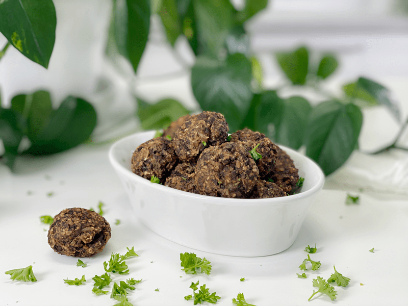
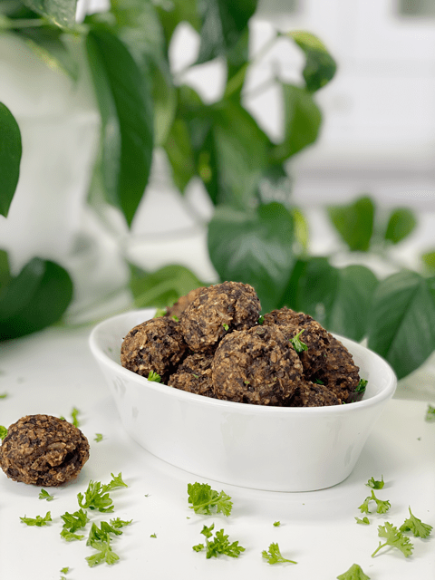
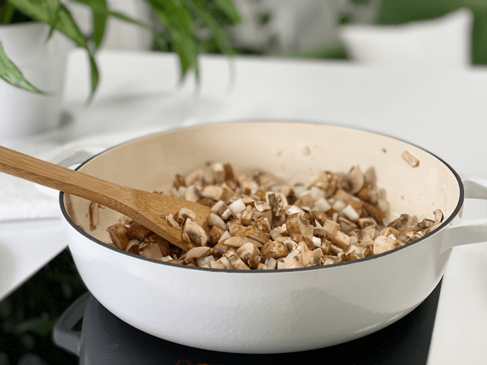
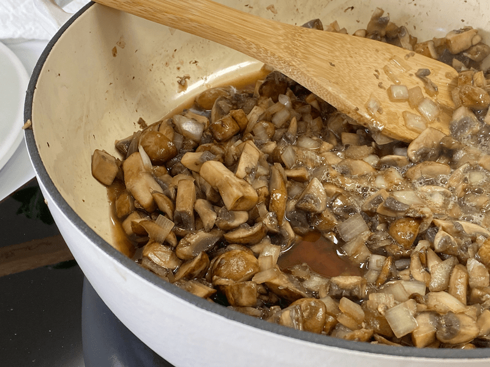
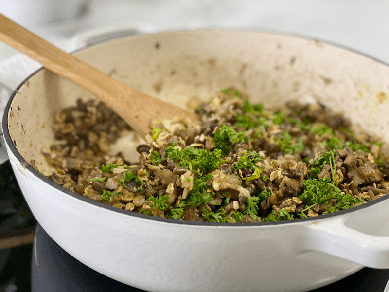
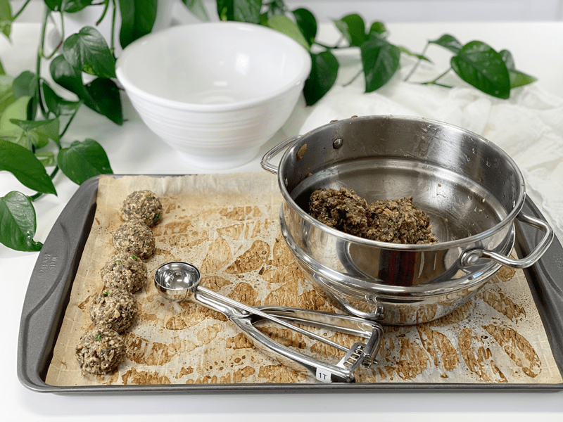
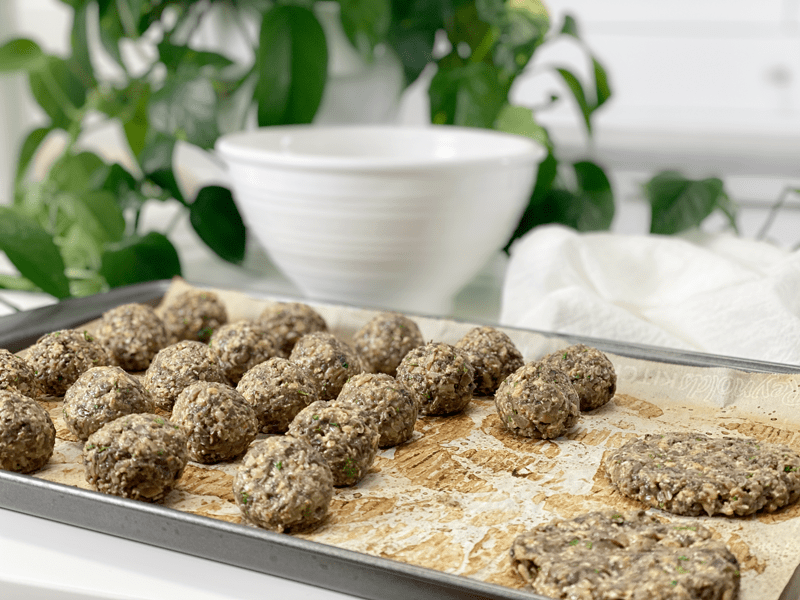
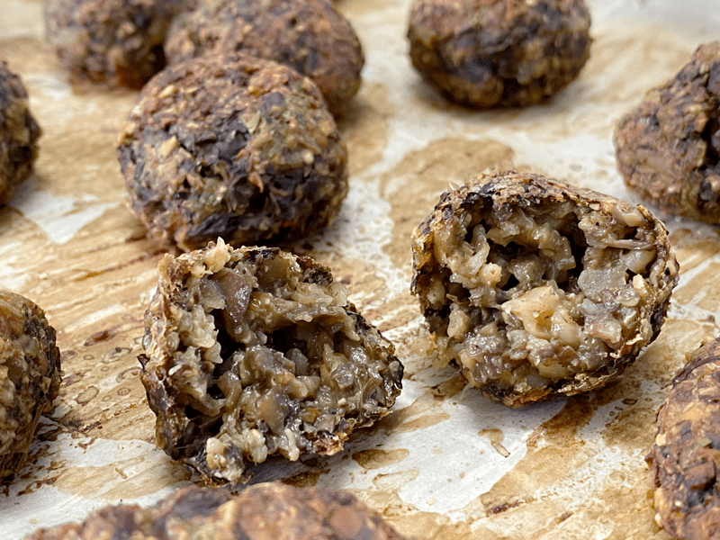

Vegan Mushroom Meatballs | Oil-Free | Gluten-Free
Be prepared for an “aroma explosion” to take place in your kitchen while these are baking. Seriously. If I thought I was hungry before I popped these in the oven…whew, I had to mop the kitchen floor due to my drooling while the magic was taking place in the oven. They have a flavorful “meaty” taste to them…all thanks to the fresh mushrooms.

I haven’t been a fan of mushrooms for the majority of my life. Not one tiny sliver could be disguised; I would find and pluck it from my plate. BUT through the power of raw foods, my taste buds really shifted. Now, thankfully, I genuinely enjoy them. I might even go as far as saying that if you have a picky eater in your household and they refuse to eat mushrooms…well, this recipe might change their mind.
Right after I pulled these from the oven, Bob was hovering. After a decade of my creating recipes and taking photos of every dish I make, Bob has learned to ALWAYS ask for a nibble before diving in. He used to sneak off with my creations before photos were taken, which caused me more work. But to be honest, how could I ever get upset? If he enjoys the healthy food I make…then honey, eat all you want, photos taken or not! Let’s get cracking and start talking the bulk of this recipe.
Ingredient Run-Down
Mushrooms
- I used my all-time favorite, fresh organic crimini mushrooms. They are small to medium in size and have a rounded cap with a short, stubby stem. The smooth cap ranges from light to dark brown and is firm and spongy. The short white stem is also edible, so I diced them up as well–no waste. They are mild and somewhat earthy, with a meaty texture.
- If you don’t like to eat the mushroom stalks, pop them off and save for making soup stock.
- Time-saving tip – I have made these over and over… this time I doubled the recipe and to reduce my prep time with chopping 2 pounds of mushrooms, I pulsed them in the food processor, fitted with an “S” blade, in small batches.
Ground Flaxseed
- Don’t want to omit this ingredient, since it acts as a binder to hold all the ingredients together. If you can’t consume them or don’t have them on hand, you can substitute them with ground chia seeds, or even some powdered psyllium seeds.
Rolled Oats and Brown Rice
- These two ingredients did not add bulk to the meatless ball, but they took the place of traditional bread crumbs. If you need assistance in making brown rice that is more nutrient-dense, click (here).
- To ensure that your oats are gluten-free and not cross-contaminated, look for a brand that states “gluten-free” on the bag.
Nutritional Yeast
- Nutritional yeast is a dairy-free savory food seasoning especially favored by vegans for its cheese-like flavor.
- Many (but not all) nutritional yeast brands are fortified with vitamin B12, which is usually found only in animal products.
- It adds another layer of flavor to the overall recipe–“umami,” which is known as “the fifth taste.”

Make Every Bite Count
- Mushrooms contain protein, vitamins, minerals, and antioxidants, which are chemicals that help the body eliminate free radicals. They are also the only vegan, non-fortified dietary source of vitamin D.
- On top of using organic ingredients (when at all possible), we need to prepare our bodies for the healthy foods we make. One way to do that is through prayer and meditation, which are the best relaxation techniques we have. Getting outside of our heads and our troubles, allowing us to see life differently.
I hope you enjoy this recipe. Today, I served it over a bed of spaghetti squash noodles and topped it with a seasoned tomato sauce. It was heavenly. Please leave a comment below. Stay healthy, and may your day be blessed. amie sue

Ingredients
Yields 26 (1 Tbsp measurement each) meatless balls
or 13 (2 Tbsp measurements each) patties
- 1 lb (5 cups chopped) mushrooms
- 1/2 cup finely diced onion
- 2 Tbsp ground flaxseed mixed in 4 Tbsp water
- 1/2 cup gluten-free rolled oats
- 1/2 cup cooked brown rice
- 1/3 cup finely chopped fresh parsley
- 1/4 cup nutritional yeast
- 2 tsp garlic powder
- 1 tsp oregano
- 1 tsp sea salt
- 1/4 tsp black pepper
Preparation
Sauté Mushrooms & Onions
- Before using the mushrooms remove any soil and grit. If necessary, trim the ends of the stalks.
- Place a large frying pan over medium heat, add the chopped mushrooms and diced onions. Cook until the mushrooms turn darker brown (not burnt but brown)
- Mushrooms contain a lot of moisture, so you don’t need any water to do the typical water sauté. It might fool you at first, but just keep stirring it around, and soon you will start to see the liquid release.
- I cooked mine until almost all the water released cooked back up, which took nearly 10 minutes. Don’t let them dry out.
- While keeping an eye on the pan, in a small bowl, whisk together the ground flax and water. Set aside.
- Once the mushrooms and onion have fully cooked down, turn the heat off.
Assembly
- Preheat the oven to 425 degrees (F) and line a baking pan with parchment paper. Set aside.
- Add the oats, rice, parsley, nutritional yeast, garlic powder, oregano, parsley, salt, and pepper to the pan with the cooked mushrooms. Stir everything together, making sure the spices are evenly dispersed.
- Place the mixture in the food processor, fitted with the “S” blade, and pulse several times to create a batter that sticks together when rolled into a bowl.
- I made these without doing the food processor step, and they didn’t hold together very well.
- Just be careful that you don’t create a paté. You want a little texture.
- Place the batter in the fridge overnight if possible so all the flavors can meld and deepen.
- Using a 1 Tbsp measurement (I used a cookie scoop), roll the batter into the palm of your hands to create a ball shape and place on a parchment-lined baking pan.
- To prevent the batter from sticking to your hands, have a little bowl of water alongside you; wet them as needed.
- Bake for 15 minutes, flip them and cook another 15 minutes.
- I used the convection bake feature on my oven, so be sure to watch the meatless balls the first time you bake them. Document the cooking time that works with your oven.
- Enjoy right away. If you have leftovers, they can be stored in an airtight container in the fridge (5 days) or freezer (up to 3 months). To reheat, place in the oven set at 400 degrees for roughly 10 minutes until warmed through.
-

-
Dry sauté the diced mushrooms and onions.
-

-
As they cook, the mushrooms start to release water, which helps with the sauté process.
-

-
After the mushrooms and onions are done cooking, mix in all of the remaining ingredients.
-

-
1 Tbsp worth of batter makes the perfect size meatball.
-

-
Use part of the batter to make patties too.
-

-
Here is a vegan meatball cut in half. There is a crust on the outside yet it is slightly moist on the inside.
© AmieSue.com